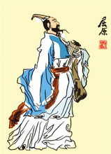
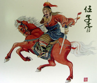
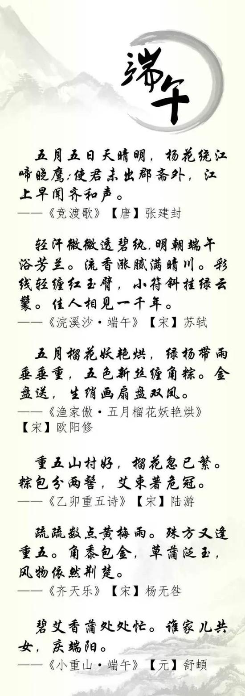

【端午节历史起源】
源于纪念屈原
据《史记》“屈原贾生列传”记载，屈原，是春秋时期楚怀王的大臣。他倡导举贤授能，富国强兵，力主联齐抗秦，遭到贵族子兰等人的强烈反对，他遭谗去职，被赶出都城，流放到沅、湘流域。他在流放中，写下了忧国忧民的《离骚》、《天问》、《九歌》等不朽诗篇，独具风貌，影响深远（因而，端午节也称诗人 节）。公元前278年，秦军攻破楚国京都。屈原眼看自己的祖国被侵略，心如刀割，但是始终不忍舍弃自己的祖国，于五月初五，在写下了绝笔作《怀沙》之后，抱石投汨罗江身死，以自己的生命谱写了一曲壮丽的爱国主义乐章。 传说屈原死后，楚国百姓哀伤不已，纷纷涌到汨罗江边去凭吊屈原。渔夫们划起船只，在江上来回打捞他的真身。有位渔夫拿出为屈原准备的饭团、鸡蛋等食物，“扑通、扑通”地丢进江里，说是让鱼龙虾蟹吃饱了，就不会去咬屈大夫的身体了。人们见后纷纷仿效。一位老医师则拿来一坛雄黄酒倒进江里，说是要药晕蛟龙水兽，以免伤害屈大夫。后来为怕饭团为蛟龙所食，人们想出用楝树叶包饭，外缠彩丝，发展成粽子。 以后，在每年的五月初五，就有了龙舟竞渡、吃粽子、喝雄黄酒的风俗，以此来纪念爱国诗人屈原。
源于纪念伍子胥
端午节的第二个传说，在浙江一带流传很广，是纪念春秋时期的伍子胥。伍子胥名员，楚国人，父兄均为楚王所杀，后来子胥弃暗投明，奔向吴国，助吴伐楚，五 战而入楚都郢城。当时楚平王已死，子胥掘墓鞭尸三百，以报杀父兄之仇。吴王阖庐死后，其子夫差继位，吴军士气高昂，百战百胜，越国大败，越王勾践请和，夫差许之。子胥建议，应彻底消灭越国，夫差不听，吴国大宰辅伯嚭受越国贿赂，谗言陷害子胥，夫差信之，赐子胥宝剑，子胥以此死。子胥本为忠良，视死如归，在死前对邻舍人说：“我死后，将我眼睛挖出悬挂在吴京之东门上，以看越国军队入城灭吴”，便自刎而死，夫差闻言大怒，令取子胥之尸体装在皮革里于五月五日投入大江，因此相传端午节亦为纪念伍子胥之日。
有关端午节的诗词
